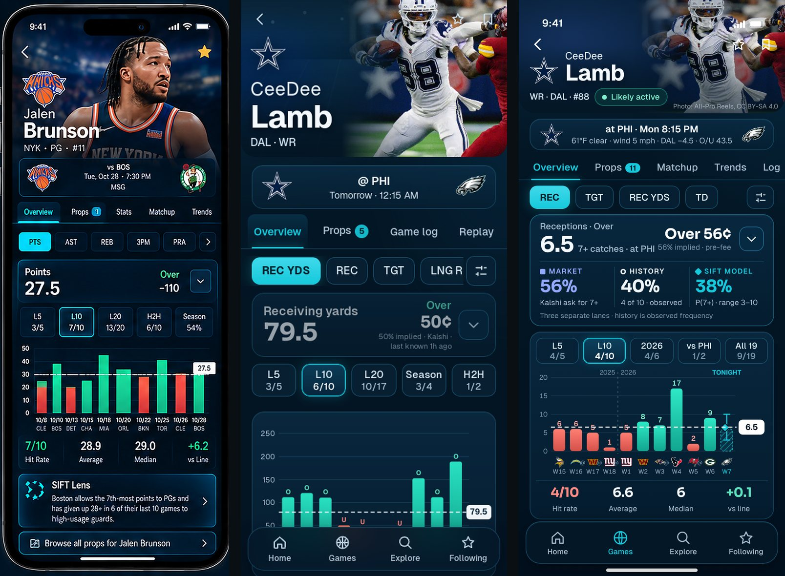
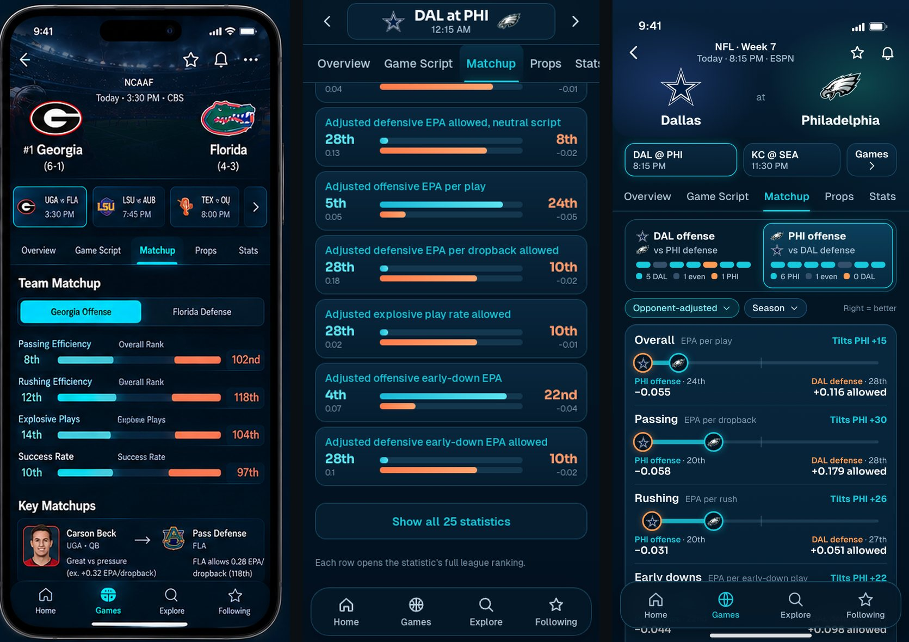
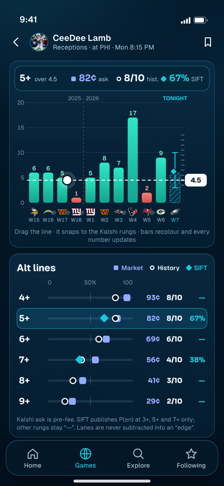
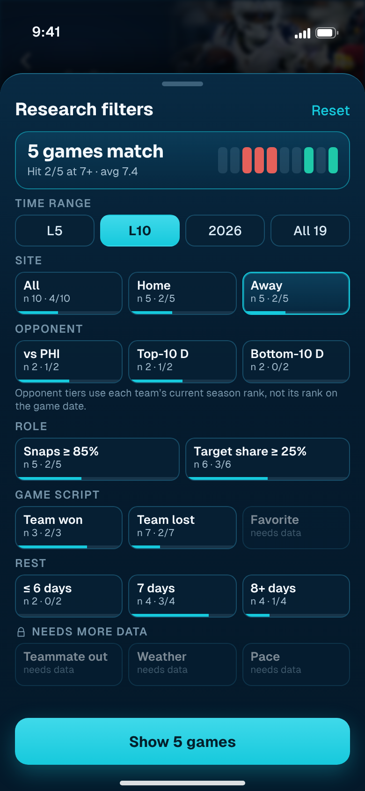
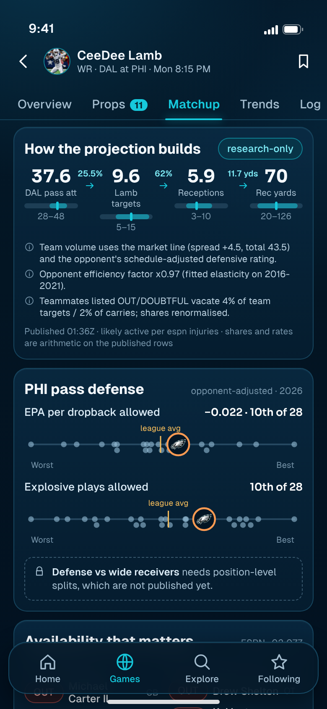
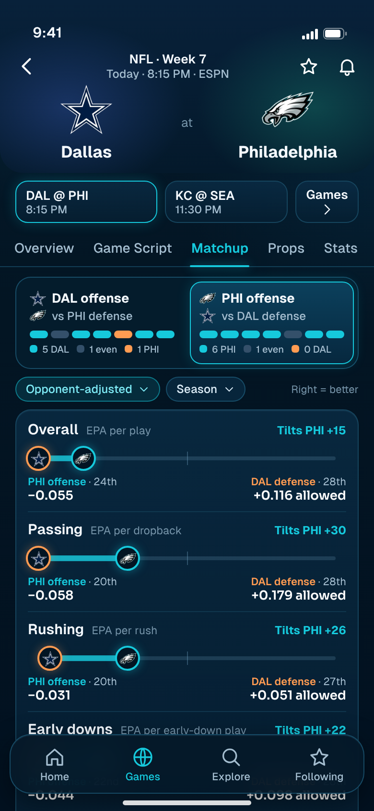
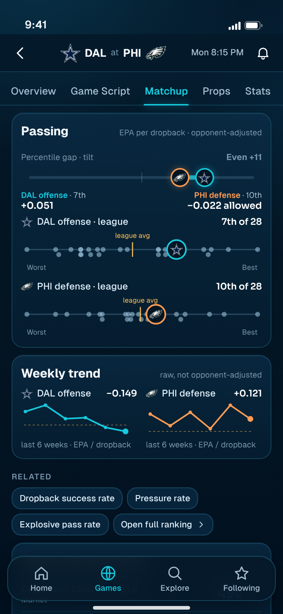
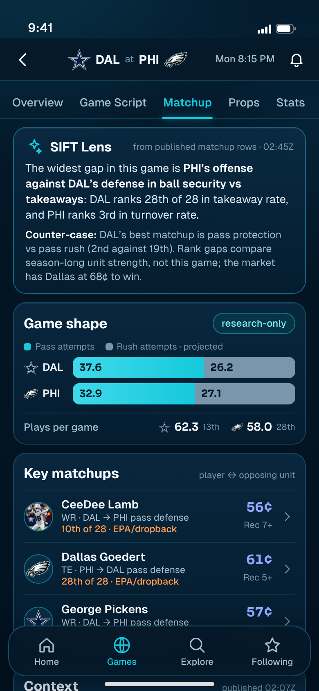

<title>SIFT Research Redesign</title>
<meta name="claude:viewport-fit-sides" content="cover">
<link rel="stylesheet" href="https://fonts.googleapis.com/css2?family=Geist:wght@400;500;600;700&family=Sora:wght@600;700&display=swap">
<style>
  :root { color-scheme: dark; --bg:#031523; --bg2:#051d30; --panel:#08243a; --line:#174861; --line2:#1c6683; --cyan:#16c9dc; --text:#f4f9fe; --muted:#a4bdcf; --dim:#7593a8; --mkt:#93a9ff; --built:#25d6ab; --wire:#f5bd5b; --new:#ff6f91;
    --ui:'Geist',-apple-system,'SF Pro Text','Helvetica Neue',Arial,sans-serif; --num:'Sora','Geist',-apple-system,Arial,sans-serif; }
  * { box-sizing: border-box; }
  body { background: radial-gradient(120% 40% at 10% -4%, rgba(16,98,132,.34), transparent 60%), linear-gradient(180deg,#04192a,#031523 40%,#021120); color: var(--text); font: 400 16px/1.55 var(--ui); padding-left: max(16px, env(safe-area-inset-left, 0px)); padding-right: max(16px, env(safe-area-inset-right, 0px)); padding-block: 28px 64px; -webkit-font-smoothing: antialiased; }
  main { max-width: 980px; margin: 0 auto; display: grid; gap: 44px; }
  h1 { font: 700 clamp(30px, 6vw, 46px)/1.08 var(--ui); letter-spacing: -.03em; text-wrap: balance; }
  h1 em { font-style: normal; color: var(--cyan); }
  h2 { font: 700 clamp(22px, 4vw, 28px)/1.2 var(--ui); letter-spacing: -.02em; text-wrap: balance; }
  h3 { font: 600 18px/1.3 var(--ui); letter-spacing: -.01em; }
  p { color: #cfe0ec; max-width: 66ch; } .dim { color: var(--dim); } .sm { font-size: 14px; }
  .eyebrow { font: 600 12px/1 var(--ui); letter-spacing: .1em; text-transform: uppercase; color: var(--cyan); }
  .tag { display: inline-block; font: 700 12px/1 var(--ui); letter-spacing: .06em; padding: 5px 8px; border-radius: 6px; color: #031523; }
  .tag.built { background: var(--built); } .tag.wire { background: var(--wire); } .tag.new { background: var(--new); }
  .hero { display: grid; gap: 14px; }
  .banner { display: flex; flex-wrap: wrap; gap: 8px 16px; padding: 12px 14px; border-radius: 14px; border: 1px solid var(--line); background: rgba(8,36,58,.6); font-size: 14px; color: var(--muted); }
  .banner b { color: var(--text); font-weight: 600; }
  .card { border-radius: 18px; border: 1px solid rgba(23,72,97,.95); background: linear-gradient(180deg, rgba(11,46,72,.7), rgba(6,31,50,.8)); padding: 18px; }
  .grid3 { display: grid; gap: 14px; grid-template-columns: repeat(auto-fit, minmax(220px, 1fr)); }
  .grid3 .card { display: grid; gap: 6px; align-content: start; } .grid3 .card p { font-size: 14.5px; }
  .lane { display: inline-flex; align-items: center; gap: 6px; font-weight: 600; }
  .lane i { width: 10px; height: 10px; display: inline-block; background: currentColor; border-radius: 3px; } .lane.h i { border-radius: 50%; background: transparent; border: 2.5px solid currentColor; } .lane.z i { transform: rotate(45deg); width: 9px; height: 9px; }
  .cmp { display: grid; gap: 14px; }
  .cmp img { width: 100%; height: auto; border-radius: 14px; border: 1px solid var(--line); display: block; }
  .cmp .cap { display: grid; grid-template-columns: repeat(3, 1fr); gap: 8px; font: 600 12px/1.2 var(--ui); letter-spacing: .08em; text-transform: uppercase; color: var(--dim); text-align: center; }
  ul.lost { display: grid; gap: 8px; padding-left: 20px; color: #cfe0ec; font-size: 15px; } ul.lost b { color: var(--text); font-weight: 600; }
  .screen { display: grid; gap: 22px; grid-template-columns: minmax(0, 390px) minmax(0, 1fr); align-items: start; }
  @media (max-width: 760px) { .screen { grid-template-columns: 1fr; } }
  .phone { position: relative; width: 100%; max-width: 390px; }
  .phone img { width: 100%; height: auto; display: block; border-radius: 26px; border: 1px solid var(--line); box-shadow: 0 18px 50px rgba(0,0,0,.5); }
  .toggle { margin-top: 10px; width: 100%; height: 44px; border-radius: 12px; border: 1px solid var(--line2); background: rgba(8,44,70,.8); color: var(--text); font: 600 14px var(--ui); cursor: pointer; }
  .toggle[aria-pressed='true'] { border-color: var(--cyan); color: var(--cyan); }
  .body { display: grid; gap: 14px; align-content: start; }
  .body h3 .id { font-family: var(--num); color: var(--cyan); margin-right: 8px; }
  .kv { display: grid; gap: 8px; } .kv div { display: grid; grid-template-columns: 112px 1fr; gap: 12px; font-size: 14.5px; } .kv dt { color: var(--dim); font-weight: 600; } .kv dd { color: #cfe0ec; }
  table { width: 100%; border-collapse: collapse; font-size: 14px; } th { text-align: left; font: 600 12px/1.2 var(--ui); letter-spacing: .08em; text-transform: uppercase; color: var(--dim); padding: 0 10px 10px 0; } td { padding: 10px 10px 10px 0; border-top: 1px solid rgba(23,72,97,.7); vertical-align: top; color: #cfe0ec; } td:first-child { color: var(--text); font-weight: 500; }
  .scroll { overflow-x: auto; -webkit-overflow-scrolling: touch; } .scroll table { min-width: 640px; }
  .ask { display: grid; gap: 10px; counter-reset: q; } .ask li { list-style: none; padding: 12px 14px; border-radius: 12px; border: 1px solid var(--line); background: rgba(8,36,58,.55); font-size: 15px; color: #cfe0ec; }
  .ask li b { color: var(--text); }
</style>

<main>
<header class="hero">
  <span class="eyebrow">Design review · nothing here is built</span>
  <h1>SIFT research, <em>redesigned</em></h1>
  <p>Player Research and Game Matchup, first. Same midnight-navy identity, same four tabs, same Home and Games. The research pages change: chart first, three separate evidence lanes, and opponent-adjusted offense paired against defense, with every number tappable.</p>
  <div class="banner"><span><b>Data on screen is real.</b> Tonight’s DAL at PHI, CeeDee Lamb receptions, from SIFT’s own publications captured 2026-10-26 (matchup 02:45Z, projection 01:36Z, Kalshi quotes 03:08Z).</span><span><b>Status layer.</b> Tap “Show data status” on any screen to see what is built today, what is published but not wired in, and what needs new data.</span></div>
  <div class="banner"><span class="tag built">BUILT</span><span>already in v3 with real data</span><span class="tag wire">WIRE</span><span>published data exists; v3 does not use it yet (integration work, no new data source)</span><span class="tag new">NEW</span><span>needs data or a feed SIFT does not publish today</span></div>
</header>

<section style="display:grid;gap:18px">
  <div><span class="eyebrow">1 · Gap analysis</span><h2>What the build lost against the approved references</h2></div>
  <div class="cmp"><div class="cap"><span>Approved reference</span><span>Current build, real data</span><span>Proposed</span></div></div>
  <ul class="lost">
    <li><b>The chart fell below the fold.</b> With a verified photo hero, four stacked cards sit above it; the reference puts the chart at about 60% of the screen. Proposed: the chart card starts at 58% and the whole chart, with its summary strip, ends above the tab bar.</li>
    <li><b>No opponent, trend or model context.</b> The reference has Overview · Props · Stats · Matchup · Trends. The build kept Overview · Props · Game log · Replay, so there is nowhere to ask “who is he facing?”.</li>
    <li><b>The model lane is missing.</b> SIFT publishes projections (median, 10–90 range, P(≥n), the adjustments applied) for NFL, NBA and NHL; v3 ignores them, and a quote over 30 minutes old greys out the whole line card.</li>
    <li><b>Filters are applied blind.</b> The reference sheet promised teammate availability, blowout and pace. We dropped what is unsupported without saying so, and no option shows its sample size before you tap it.</li>
  </ul>
  <div class="cmp"><div class="cap"><span>Approved reference</span><span>Current build, real data</span><span>Proposed</span></div></div>
  <ul class="lost">
    <li><b>Offense is no longer paired with defense.</b> The reference sets “Georgia Offense” against “Florida Defense”. The build lists 25 team-versus-team rank cards, so DAL’s defense (28th) and PHI’s defense (10th) share one card and the bars say nothing about who holds the advantage.</li>
    <li><b>No league context.</b> Every published value carries the league average, median, best, worst and percentile. The build shows only an ordinal.</li>
    <li><b>No Key Matchups, script or context.</b> The reference links a player to the unit he faces, with a stat. The build has no path from a matchup to a prop, and “Show all 25 statistics” is a table in disguise.</li>
  </ul>
</section>

<section style="display:grid;gap:16px">
  <div><span class="eyebrow">2 · Principles</span><h2>Five rules every research screen follows</h2></div>
  <div class="grid3">
    <div class="card"><h3>Chart first</h3><p>The first screen reaches the chart, the line and the price. Everything else supports it or sits one tap away.</p></div>
    <div class="card"><h3>Three lanes, never blended</h3><p><span class="lane" style="color:var(--mkt)"><i></i>Market</span> is the Kalshi price. <span class="lane h" style="color:#eef6fb"><i></i>History</span> is how often it happened. <span class="lane z" style="color:var(--cyan)"><i></i>SIFT</span> is published model output only. We show them side by side and never subtract them into an “edge” or “value”.</p></div>
    <div class="card"><h3>Paired and adjusted</h3><p>Offense is always set against the opposing defense, opponent-adjusted, with the league distribution behind every value.</p></div>
    <div class="card"><h3>Everything taps</h3><p>Logos open teams, values open the league ranking, rungs open the contract, rows open the player or prop, bars open that game.</p></div>
    <div class="card"><h3>Honest locks</h3><p>A feature SIFT cannot support yet is shown disabled with the reason. It is never faked, estimated or quietly dropped.</p></div>
  </div>
</section>

<section style="display:grid;gap:30px">
  <div><span class="eyebrow">3 · Player Research</span><h2>Four screens, one research loop</h2><p class="dim sm" style="margin-top:6px">Loop: read the line, see who agrees, find the rung, cut the sample, understand the matchup.</p></div>

  <article class="screen" data-pair="p1">
    <div class="phone"><button class="toggle" aria-pressed="false">Show data status</button></div>
    <div class="body"><h3><span class="id">P1</span>Overview, chart first</h3>
      <dl class="kv"><div><dt>Question</dt><dd>Is tonight’s line high or low for him, and who agrees?</dd></div>
      <div><dt>Workflow</dt><dd>Open from a Key Matchup, a prop or search. The line (6.5, 7+ at 56¢) and the three lanes sit above the chart: market 56%, history 4 of 10, SIFT 38%. One 17-catch game lifts the average to 6.6; the median of 6 and the 4-of-10 hit rate tell the truer story. The hatched bar is tonight’s published range (3–10), with the diamond at the mean.</dd></div>
      <div><dt>Taps</dt><dd>Bar → that game’s log. Window chip → re-cut (L5, L10, 2026, vs PHI, all 19). Price or ⌄ → P2. Sliders → P3. Diamond or SIFT lane → P4. Opponent logo → team. Hero photo is verified and credited; without one it is the logo-led hero.</dd></div>
      <div><dt>Data</dt><dd><span class="tag built">BUILT</span> log, windows, ladder price, summary. <span class="tag wire">WIRE</span> SIFT lane and range (projection feed), availability chip, weather and spread strip.</dd></div></dl></div>
  </article>

  <article class="screen" data-pair="p2">
    <div class="phone"><button class="toggle" aria-pressed="false">Show data status</button></div>
    <div class="body"><h3><span class="id">P2</span>Drag the line, compare every rung</h3>
      <dl class="kv"><div><dt>Question</dt><dd>Which rung should I be looking at?</dd></div>
      <div><dt>Workflow</dt><dd>Drag the dashed line; it snaps to the real Kalshi rungs, bars recolour, and the readout updates (5+: 82¢, 8 of 10, SIFT 67%). Below, each rung is one row with the three lanes on a shared 0–100 track, so agreement and disagreement are visible at a glance (7+: market 56%, history 4/10, SIFT 38%).</dd></div>
      <div><dt>Honesty</dt><dd>SIFT publishes P(≥n) at only three rungs (3+, 5+, 7+); other rungs show “—”, never an estimate. No row is scored, ranked or coloured good or bad.</dd></div>
      <div><dt>Data</dt><dd><span class="tag built">BUILT</span> ladder prices and history. <span class="tag wire">WIRE</span> SIFT thresholds. <span class="tag new">NEW UI</span> the scrubber and the dumbbell rows, over the same data.</dd></div></dl></div>
  </article>

  <article class="screen" data-pair="p3">
    <div class="phone"><button class="toggle" aria-pressed="false">Show data status</button></div>
    <div class="body"><h3><span class="id">P3</span>Research builder: cut the sample before you trust it</h3>
      <dl class="kv"><div><dt>Question</dt><dd>Does it hold up in the situations that matter tonight?</dd></div>
      <div><dt>Workflow</dt><dd>Every option shows its sample size and hit rate before you apply it, so a thin split is obvious (vs PHI: 2 games). The live card shows which of the last ten games remain and what they did (Away: 5 games, 2 of 5 at 7+). Apply returns to the chart with the chips set.</dd></div>
      <div><dt>Locked</dt><dd>Teammate out, weather and pace are visible but disabled, with “needs data”. The opponent tier uses each team’s current rank, and says so.</dd></div>
      <div><dt>Data</dt><dd><span class="tag built">BUILT</span> time, site, role (snaps, target share), game script (won/lost), rest. <span class="tag wire">WIRE</span> opponent tiers, favorite/underdog (closing lines are in the league layer). <span class="tag new">NEW</span> teammate availability history, weather history, pace.</dd></div></dl></div>
  </article>

  <article class="screen" data-pair="p4">
    <div class="phone"><button class="toggle" aria-pressed="false">Show data status</button></div>
    <div class="body"><h3><span class="id">P4</span>Matchup tab: why the projection says 5.9</h3>
      <dl class="kv"><div><dt>Question</dt><dd>What is the projection built from, and who is he facing?</dd></div>
      <div><dt>Workflow</dt><dd>The opportunity chain shows the published rows end to end: DAL 37.6 pass attempts (28–48) → 9.6 targets (25.5%, implied) → 5.9 receptions (62% catch rate, implied) → 70 yards. The model’s own adjustment notes are quoted verbatim. Then the opponent: PHI’s pass defense is 10th of 28 in EPA per dropback allowed, drawn against all 28 teams with the league average marked.</dd></div>
      <div><dt>Locked</dt><dd>Defense against wide receivers specifically needs position-level splits. Not published; shown as a locked row.</dd></div>
      <div><dt>Data</dt><dd><span class="tag wire">WIRE</span> projection rows, adjustments, availability, ranking documents. <span class="tag new">NEW</span> position-level defense.</dd></div></dl></div>
  </article>
</section>

<section style="display:grid;gap:30px">
  <div><span class="eyebrow">4 · Game Matchup</span><h2>Three screens: where it tilts, why, and what to research</h2><p class="dim sm" style="margin-top:6px">“Tilt” is the offense’s league percentile minus the opposing defense’s. Positive tilts toward the offense; ±15 or less reads as even. It compares season-long unit strength. It is not a prediction and not a betting edge.</p></div>

  <article class="screen" data-pair="g1">
    <div class="phone"><button class="toggle" aria-pressed="false">Show data status</button></div>
    <div class="body"><h3><span class="id">G1</span>Matchup: offense against defense, both ways</h3>
      <dl class="kv"><div><dt>Question</dt><dd>Where does this game tilt?</dd></div>
      <div><dt>Workflow</dt><dd>The direction control is also the summary: DAL’s offense tilts DAL in 5 of 7 units, PHI in 1; PHI’s offense tilts PHI in all 6 non-even units. Pick a direction and read the rows. Each row is a league-percentile track: the offense marker, the defense marker, and the gap filled between them. Passing, for instance: PHI’s offense (20th) against DAL’s defense (28th of 28, +0.179 EPA per dropback allowed) tilts PHI by 30.</dd></div>
      <div><dt>Taps</dt><dd>Row → G2. Logo → team. Values → league ranking. Direction, adjusted/raw and window are one-tap controls.</dd></div>
      <div><dt>Data</dt><dd><span class="tag built">BUILT</span> the underlying paired metrics are in every NFL event document (25 rows; NBA about 11; NHL about 28). <span class="tag wire">WIRE</span> pairing, percentiles and the tilt. <span class="tag new">NEW</span> CFB: no matchup rows are published today.</dd></div></dl></div>
  </article>

  <article class="screen" data-pair="g2">
    <div class="phone"><button class="toggle" aria-pressed="false">Show data status</button></div>
    <div class="body"><h3><span class="id">G2</span>One unit, in depth</h3>
      <dl class="kv"><div><dt>Question</dt><dd>How big is the gap against the whole league, and is it recent?</dd></div>
      <div><dt>Workflow</dt><dd>Tap a unit. Both teams are placed on the full-league strip (28 dots, right is better, league average marked), then the last six weeks of each side, then related statistics and where the matchup shows up in markets and props. Every dot is a team; every chip opens a ranking.</dd></div>
      <div><dt>Honesty</dt><dd>The weekly trend is raw, not opponent-adjusted, and says so. It comes from the NFL history layer; there is no per-week trend for other sports yet.</dd></div>
      <div><dt>Data</dt><dd><span class="tag wire">WIRE</span> ranking documents (league strips), weekly team splits, markets. <span class="tag new">NEW</span> adjusted weekly trends and non-NFL trends.</dd></div></dl></div>
  </article>

  <article class="screen" data-pair="g3">
    <div class="phone"><button class="toggle" aria-pressed="false">Show data status</button></div>
    <div class="body"><h3><span class="id">G3</span>Lens, game shape, key matchups, context</h3>
      <dl class="kv"><div><dt>Question</dt><dd>What should I research next?</dd></div>
      <div><dt>Workflow</dt><dd>The Lens states the widest gap, then the counter-case, both written from the published rows. Game shape shows each team’s projected pass and rush attempts. Key Matchups links a player to the unit he faces with his own price (Goedert, PHI TE, against the league’s 28th-ranked pass defense) and opens Player Research. Context lists what is out, the weather, and how the Dallas price has moved since the open.</dd></div>
      <div><dt>Honesty</dt><dd>Team points are held in SIFT’s approval ledger, so they are not shown; attempts are promoted and are labelled research-only.</dd></div>
      <div><dt>Data</dt><dd><span class="tag built">BUILT</span> Lens wording from matchup rows. <span class="tag wire">WIRE</span> projections, injuries, weather, price history, derived player-to-unit mapping. <span class="tag new">NEW</span> a cross-game prop index (the feed holds 701 markets for this one game).</dd></div></dl></div>
  </article>
</section>

<section style="display:grid;gap:16px">
  <div><span class="eyebrow">5 · Data status</span><h2>What exists, what is published, what is missing</h2></div>
  <div class="card scroll"><table>
    <thead><tr><th>Capability</th><th>Status</th><th>Source and coverage today (2026-10-26)</th></tr></thead>
    <tbody>
      <tr><td>Game log, hit windows, summary, alt-line prices</td><td><span class="tag built">BUILT</span></td><td>NFL history layer; NBA and NHL profile logs; Kalshi quote feed.</td></tr>
      <tr><td>Filters from the log (site, role, script, rest, opponent)</td><td><span class="tag built">BUILT</span></td><td>Computed from the log; opponent tiers need the ranking documents.</td></tr>
      <tr><td>SIFT projection lane: median, range, P(≥n), adjustments, availability</td><td><span class="tag wire">WIRE</span></td><td>Projection feed: NFL 59 rows, NBA 2,170, NHL 146, CFB and MLB empty. Display is gated by the existing approval ledger (NFL receptions, targets and completions are promoted; yardage families are held). Where the ledger says withhold, the lane reads “not published”.</td></tr>
      <tr><td>League strips, percentiles, paired offense vs defense</td><td><span class="tag wire">WIRE</span></td><td>Matchup rows and ranking documents: NFL, NBA, NHL. CFB publishes none.</td></tr>
      <tr><td>Weekly team trends, plays per game</td><td><span class="tag wire">WIRE</span></td><td>NFL history layer only; raw, not opponent-adjusted.</td></tr>
      <tr><td>Injuries, weather, game price movement</td><td><span class="tag wire">WIRE</span></td><td>Event documents and market history (game-level markets).</td></tr>
      <tr><td>Defense vs position (WR, TE, RB)</td><td><span class="tag new">NEW</span></td><td>Not published.</td></tr>
      <tr><td>Teammate with/without, weather history, pace and tempo (seconds per play)</td><td><span class="tag new">NEW</span></td><td>Not published.</td></tr>
      <tr><td>Player-prop price history</td><td><span class="tag new">NEW</span></td><td>Market history covers game-level markets only.</td></tr>
      <tr><td>Edge or value signals</td><td>Not designed</td><td>Never derived from raw statistics. A model-published edge would appear only if the projection ledger allows it; none is published today.</td></tr>
    </tbody></table></div>
</section>

<section style="display:grid;gap:14px">
  <div><span class="eyebrow">6 · Your call</span><h2>Approve each screen on its own</h2></div>
  <ol class="ask">
    <li><b>P1 to P4 and G1 to G3:</b> approve, or tell me what to change per screen. Nothing is built until you do.</li>
    <li><b>Lane names.</b> “Market · History · SIFT model”: keep, or rename (for example “SIFT projection”)?</li>
    <li><b>Tilt band.</b> ±15 percentile points reads as even (about four ranks of 28). Wider, narrower, or hidden behind an info sheet?</li>
    <li><b>Hero.</b> Photo-led where a verified photo exists (as P1), otherwise the compact logo row. Keep?</li>
    <li><b>Next screens</b> once these two are approved: Prop Discovery, Team Research, Stat Detail and Rankings, as you listed.</li>
  </ol>
  <p class="dim sm">Source of every number: docs/sift3/redesign/data.js, a frozen snapshot of SIFT’s own publications. Mockup chrome (status bar, home indicator) is drawn for presentation only; the app has no device chrome.</p>
</section>
</main>

<script>
  document.querySelectorAll('.screen').forEach(function (s) {
    var id = s.getAttribute('data-pair'), img = s.querySelector('.phone img'), btn = s.querySelector('.toggle');
    btn.addEventListener('click', function () {
      var on = btn.getAttribute('aria-pressed') !== 'true';
      btn.setAttribute('aria-pressed', on ? 'true' : 'false');
      btn.textContent = on ? 'Hide data status' : 'Show data status';
      img.src = 'out/' + id + (on ? '-annot' : '') + '.png';
    });
  });
</script>
